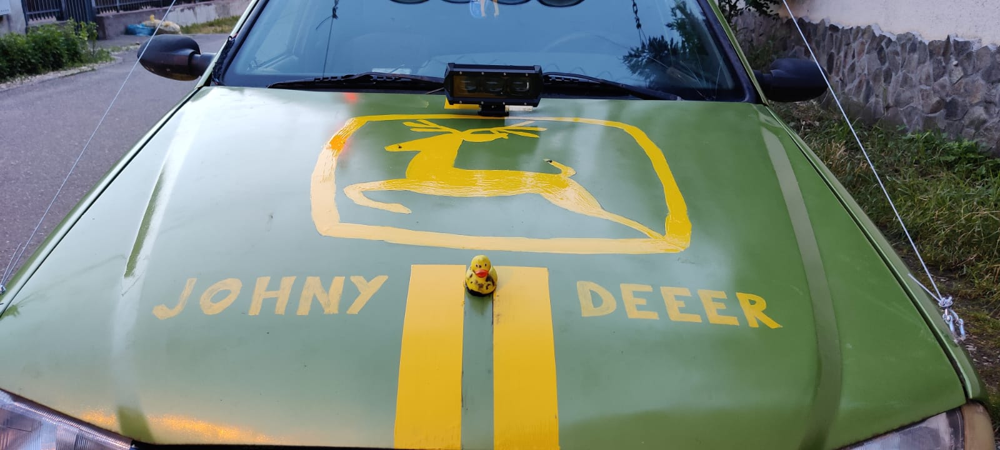
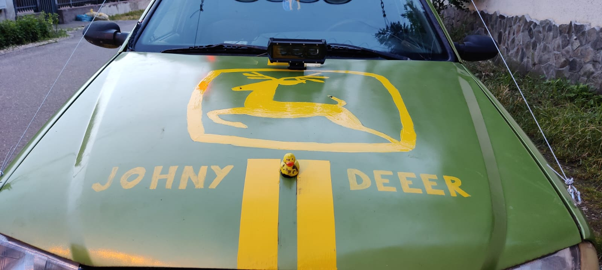
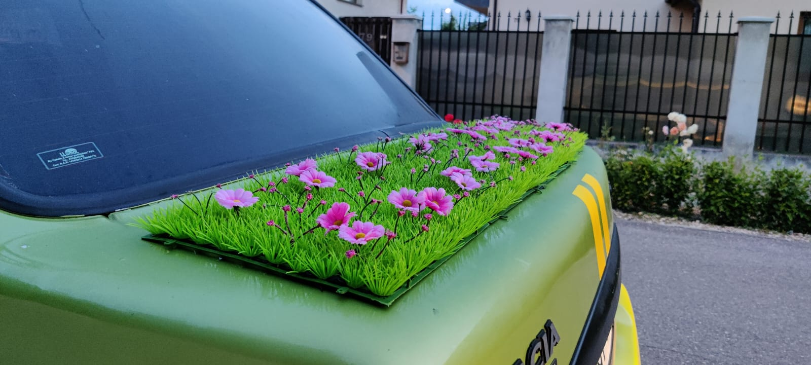
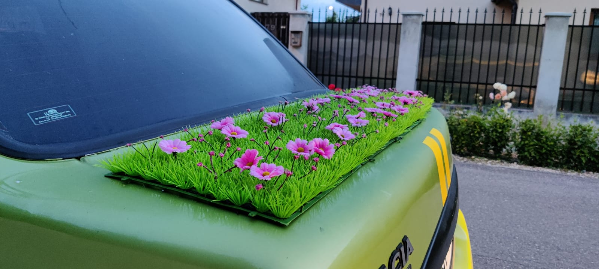

Tocmai ai văzut video-ul și te întrebi ‘la ce m-am uitat mai exact?’ (În cazul în care nu l-ai
văzut, ce mai aștepți?). Esența în formă vizuală a LowGear Specials, asta ai văzut.
Bine, bine dar cum poți rezuma LowGear Specials într-o propoziție?
LowGear Specials este o aventură cu o mașină de până la 1000€, ce te conduce către destinații
ascunse, unde călătoria în sine este principalul obiectiv.
Mai pe scurt, Overlanding on a budget.
Ți-am captat atenția? Atunci hai să continuăm discuția!
LowGear Specials este un eveniment de overlanding în care trebuie să navighezi către coordonatele
GPS din roadbook. De obicei aceste coordonate te duc la “Mama Dracului” (pe offroad), unde te
aşteaptă o panoramă frumoasă. La acele puncte vei ajunge cu o maşină cu preț de achiziție de maxim
1000€ pe care noi te încurajăm să o modifici vizual exact aşa cum vrei tu. Probabil că te gândeşti
‘Cu 1000€ nu ai cum sa iei o maşină de offroad!’, dar noi ținem să credem că nu ai nevoie de 4x4.
Suntem convinși că poți trece peste orice obstacol dacă eşti îndeajuns de hotărât SAU dacă ai destui
oameni care să împingă mașina.
De departe cel mai important aspect al evenimentului sunt oamenii cu care vei împărți această
aventură. Timp de o săptămână veți trece prin momente frumoase și amuzante, dar și prin momente
dificile (cel mai probabil). Dacă până la final de eveniment nu ai împins mașina cel puțin o dată,
înseamnă că noi, organizatorii, am făcut ceva greşit.


 

 
